Golf Course Guide
골프코스 가이드
California · Nevada · Canadian Rockies · Korea — verified first-hand, hand-picked by the locals
캘리포니아 · 네바다 · 캐나디안 로키 · 한국 — 직접 검증한, 현지인들이 추천하는 명문 코스
로스앤젤레스 카운티Los Angeles County
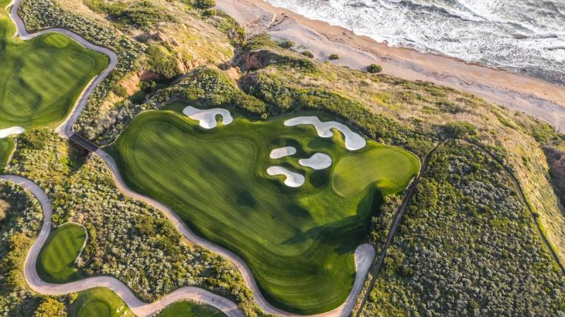
팔로스버디스 반도 절벽, 2006년 오픈. 모든 홀 태평양+카탈리나섬. PGA 챔피언십 개최. 피트 다이 깊은 벙커·심한 경사 — 전략 없이 스코어 불가.Perched on the cliffs of the Palos Verdes Peninsula, opened in 2006. Every hole frames the Pacific and Catalina Island. Host of the PGA Championship. Pete Dye's deep bunkers and severe slopes — scoring demands strategy.
팁: 그린 매우 빠름. 성수기 주말 최우선 예약.Tip: Greens are very fast. Book well ahead for peak-season weekends.
LA 카운티 최고의 프라이빗 클럽 중 하나. US Open·US Amateur 예선 개최 이력이 말해주는 챔피언십 코스. 567야드 오르막 파5 오프닝 홀이 상징적 — 첫 홀부터 실력 테스트. 1988년 US Amateur 챔피언 Eric Meeks의 홈코스.One of LA County's finest private clubs. A championship course with US Open and US Amateur qualifying history. The iconic 567-yard uphill par-5 opener tests your game from the very first tee. Home course of 1988 US Amateur champion Eric Meeks.
팁: 프라이빗 클럽 — 사전 예약 필수. 567yd 파5 오프닝은 장타자도 벅찬 시작.Tip: Private club — advance booking essential. The 567-yd par-5 opener challenges even long hitters.
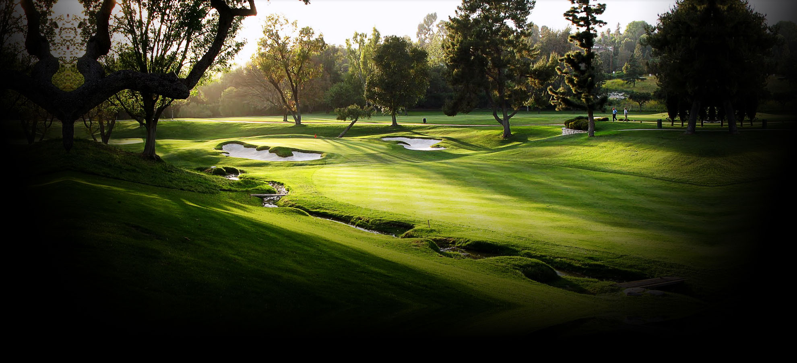
100년 역사의 프라이빗 챔피언십. Olympic Club·Harding Park를 설계한 William Watson의 작품으로, 바랑카(협곡)를 따라 굽이치는 캐니언 라우팅이 압권. 2005년 리스토어로 현대적 감각까지 갖춘, 74.1/137의 도전적인 코스. 1967년 US Girls' Junior 개최.A century-old private championship. Designed by William Watson, architect of Olympic Club and Harding Park — the canyon routing winding through barrancas is superb. Restored in 2005 for a modern feel; a demanding 74.1/137. Hosted the 1967 US Girls' Junior.
팁: 74.1/137 — LA에서 가장 도전적인 레이팅 중 하나. 협곡 바람 읽기가 핵심.Tip: 74.1/137 — among LA's most demanding ratings. Reading the canyon wind is key.

옛 쓰레기 매립지 위 W.F. Bell의 챔피언십. 처칠 장례 열차 보관됐던 푸니큘러로 진입. US Open 예선 등 수많은 대회 개최.A W.F. Bell championship built atop a former landfill. Arrive by the funicular that once housed Churchill's funeral train. Host of US Open qualifying and countless tournaments.
팁: 74.9/141 — Ike는 형, Babe는 동생.Tip: 74.9/141 — Ike is the older brother, Babe the younger.

Babe Didrikson Zaharias의 이름을 딴 코스. Ike보다 짧지만 52개 벙커와 좁은 페어웨이로 정교함 요구.Named after Babe Didrikson Zaharias. Shorter than Ike, but 52 bunkers and narrow fairways demand precision.
팁: 짧다고 만만히 보면 52개 벙커가 기다림.Tip: Underestimate its length and 52 bunkers will be waiting.
인랜드 엠파이어Inland Empire
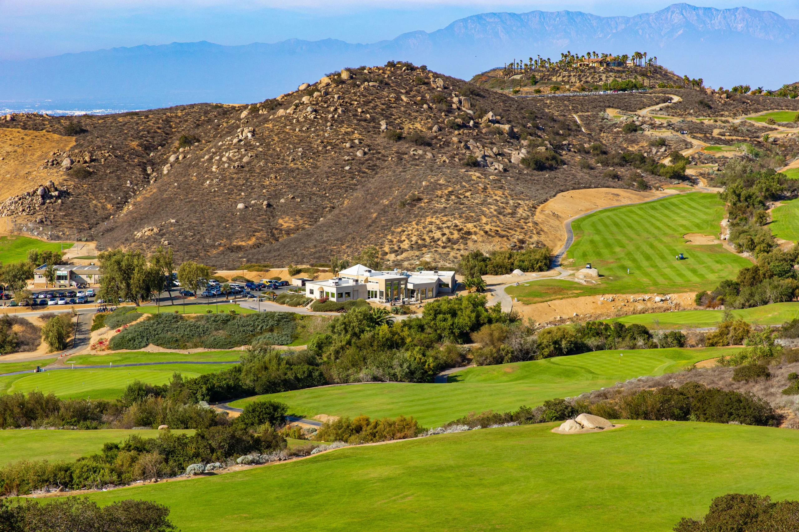
Norco 언덕 위, 사막 캐니언 지형 퍼블릭 챔피언십. 74.0/140 — Inland Empire 최고 도전.Above Norco, a desert canyon public championship. 74.0/140 — the Inland Empire's ultimate test.
팁: 74.0/140 — 정확한 티샷 필수.Tip: 74.0/140 — an accurate tee shot is essential.
샌디에이고 노스 카운티San Diego North County
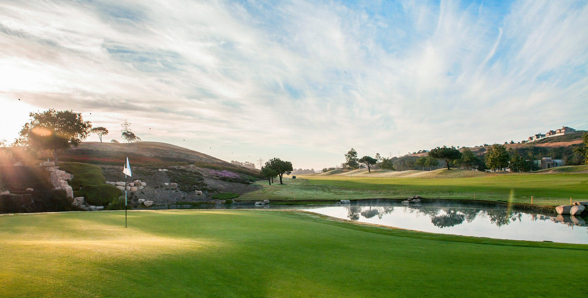
칼스배드 Greg Nash 모던 챔피언십. 습지·야생화 보존. 5개 티 박스로 전 레벨 OK. 해안 생태계를 골프로 만나는 경험.Carlsbad's modern championship by Greg Nash. Wetlands and wildflowers preserved. Five tee boxes make it playable for every level. Golf meets a coastal ecosystem.
팁: 전략적 매니지먼트. 파3가 최종 스코어 좌우.Tip: Strategic management. The par 3s decide your score.
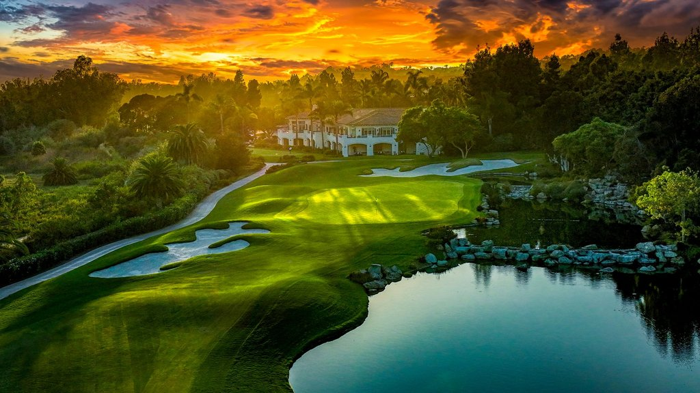
Arnold Palmer의 최고 걸작. Batiquitos Lagoon 위 구릉 해안 절벽. LPGA JTBC Classic 개최. 매끄러운 벙커 라인과 태평양 전망.Arnold Palmer's finest work. Coastal cliffs above Batiquitos Lagoon. Host of the LPGA JTBC Classic. Sculpted bunker lines and Pacific views.
팁: Park Hyatt 투숙 시 우선 예약 가능.Tip: Park Hyatt guests get priority booking.

폴브룩 구릉 히든 젬. 현지인 보물. 언덕 위 계곡 전망, 떡갈나무 숲 페어웨이. 관광객 없는 진짜 캘리포니아 골프. 실력 편차 큰 그룹에 최적.A Fallbrook hidden gem and local treasure. Valley views from the hills, fairways through oak groves. Real California golf with no crowds. Ideal for groups with mixed skill levels.
팁: 언덕 라이 적응. 클럽 선택이 스코어 결정.Tip: Adapt to hillside lies. Club selection decides the score.
테메큘라 밸리 와인 컨트리Temecula Valley Wine Country
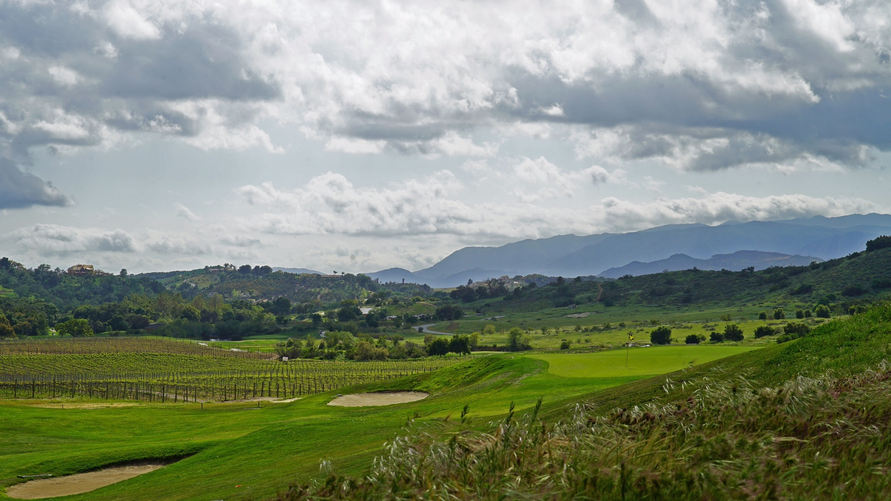
테메큘라 와인 컨트리, Arthur Hills. 포도밭 사이 페어웨이, 고도 변화 다이내믹 샷. 라운드 후 10분 40+ 와이너리. 골프+와인 완벽 조합.Temecula wine country by Arthur Hills. Fairways between vineyards, dynamic elevation changes. 40+ wineries within 10 minutes of your round. Golf plus wine, perfectly paired.
팁: 그린 매우 빠름. 와이너리 투어는 필수.Tip: Greens are very fast. A winery tour is a must.
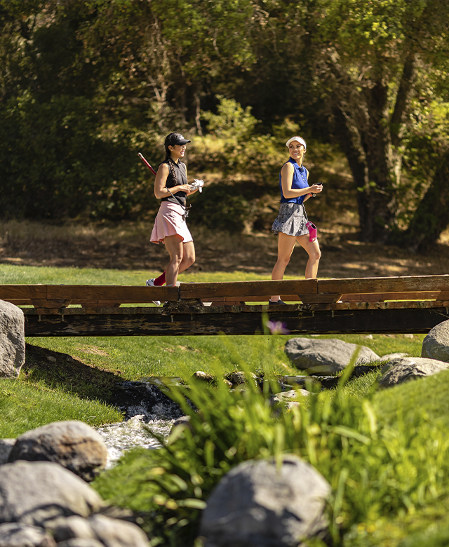
테메큘라 계곡 정상 Arthur Hills의 드라마틱 걸작. 캐니언 강제 캐리, 급격한 고도 하강, 360도 파노라마. 남캘리포니아 가장 시각적인 퍼블릭 코스.Arthur Hills' dramatic masterpiece atop Temecula Valley. Forced canyon carries, plunging elevation changes, 360° panoramas. Southern California's most visual public course.
팁: 고도 변화 극심 — 평소보다 1~2클럽 차이.Tip: Extreme elevation — play 1-2 clubs different than usual.
코첼라 밸리Coachella Valley
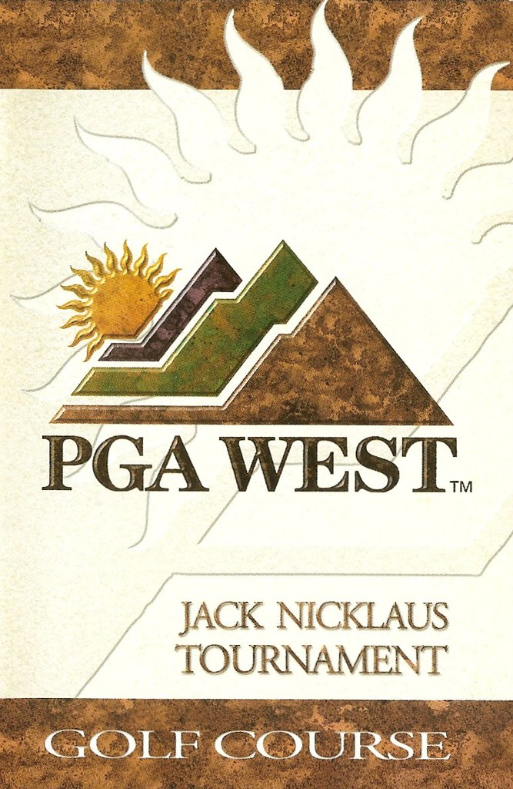
TPC Stadium Course — "프로들에게 너무 어렵다"며 1987년 PGA 투어 선수들이 기피 신청한 전설의 코스. 17번 "Alcatraz" 아일랜드 그린 파3. 2016년부터 The American Express 공동 개최.The TPC Stadium Course — the legendary layout PGA Tour players petitioned against in 1987 for being "too hard for pros". The 17th "Alcatraz" island-green par 3. Co-host of The American Express since 2016.
팁: 17번 Alcatraz — 바람 읽기 실패하면 물 속으로.Tip: 17, Alcatraz — misread the wind and it's in the water.

Santa Rosa 산맥 배경 Pete Dye의 경치 좋은 대안. Stadium보다 짧고 관대하지만 Dye의 전략은 그대로. Stadium에서 얻어맞은 다음날 최적.Pete Dye's scenic alternative against the Santa Rosa Mountains. Shorter and more forgiving than Stadium, but Dye's strategy remains. Perfect the day after Stadium beats you up.
팁: Stadium 다음날 라운딩으로 최적의 밸런스.Tip: The ideal balance as the round after Stadium.
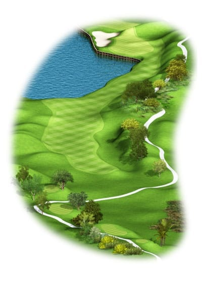
The American Express 공동 개최 코스. Nicklaus 특유의 티어드 그린과 리스크-리워드 파5. Stadium과 함께 PGA WEST 양대 산맥.Co-host of The American Express. Nicklaus' signature tiered greens and risk-reward par 5s. The other half of PGA WEST's twin peaks alongside Stadium.
팁: 그린 경사 읽기가 Nicklaus 코스의 핵심.Tip: Reading green contours is the key to a Nicklaus course.
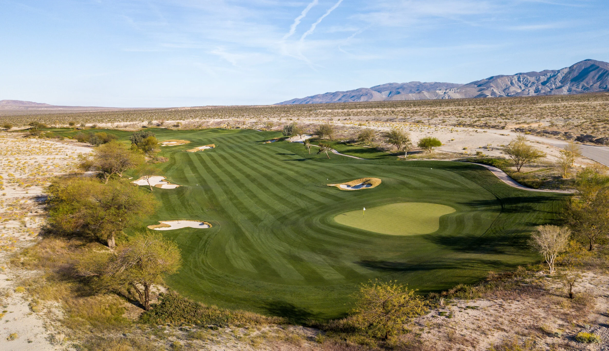
Tom Fazio가 완전 재설계한 사막 오아시스. 자연 샘물이 흐르는 물 특징. 여름엔 문 닫고 겨울 시즌 한정 — 진정한 시즌 보석.A desert oasis completely redesigned by Tom Fazio. Natural spring-fed water features. Closed in summer, winter season only — a true seasonal gem.
팁: 여름 휴장 — 10월~5월 시즌 확인 필수.Tip: Closed in summer — check the October–May season.
산타바바라 & 센트럴 코스트Santa Barbara & Central Coast
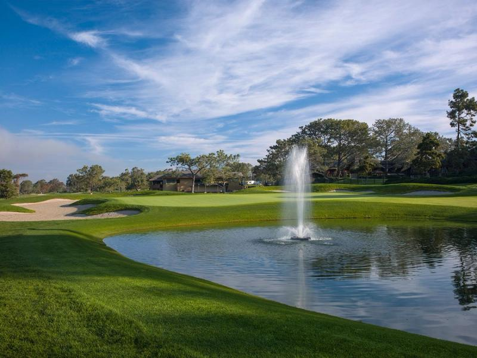
산타바바라 해안 절벽. 티박스에서 태평양 정면. 해질녘 캘리포니아 골프의 백미. 바람이 모든 걸 바꾸는 링크스 — 자연과의 전략적 대결.Santa Barbara coastal cliffs. The Pacific directly off the tee box. California golf at its golden-hour best. A links where wind changes everything — a strategic duel with nature.
팁: 바람 +1~2클럽. 해질녘 티타임 최고.Tip: Add 1-2 clubs for the wind. Twilight tee times are best.
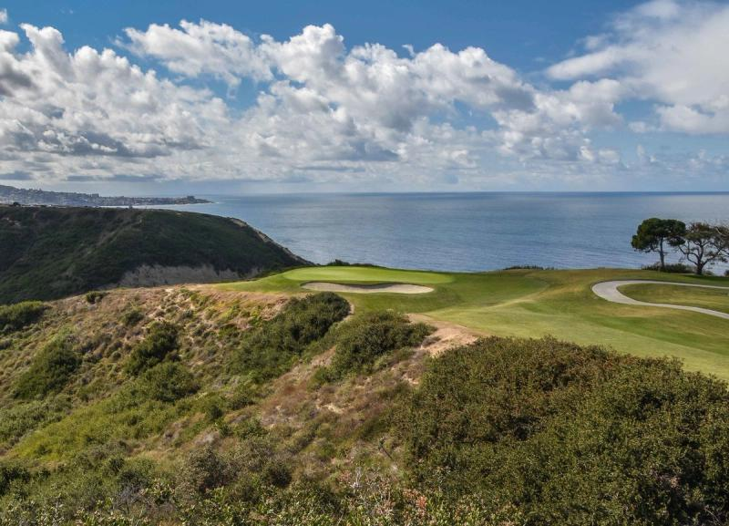
309에이커에 주택 하나 없이 오직 골프만. "La Piranha" — 1996 PGA Tour Final Stage Qualifying 개최. 현재도 USGA·SCGA 예선 정기 개최.309 acres, not a single home — golf, only golf. "La Piranha" — hosted the 1996 PGA Tour Final Stage Qualifying. Still regularly hosts USGA and SCGA qualifiers.
팁: 아침이 바람 적음. 늦은 오후는 태평양 석양.Tip: Mornings have less wind. Late afternoons bring Pacific sunsets.

솔뱅 와인 컨트리, 1956년 오픈. 바랑카(협곡) 관통 레이아웃이지만 난이도보다 풍경. Ranch Course 멤버 전용, River Course 대중 공개. 솔뱅 와인 시음 + 덴마크 마을 연계 최적.Solvang wine country, opened in 1956. A barranca-crossing layout built for scenery over difficulty. Ranch Course members-only; River Course open to the public. Pair with Solvang wine tasting and the Danish village.
팁: 오전 라운드 + 오후 와이너리. 덴마크 페이스트리 필수.Tip: Morning round, afternoon winery. Don't miss the Danish pastries.
샌디에이고 코스탈San Diego Coastal
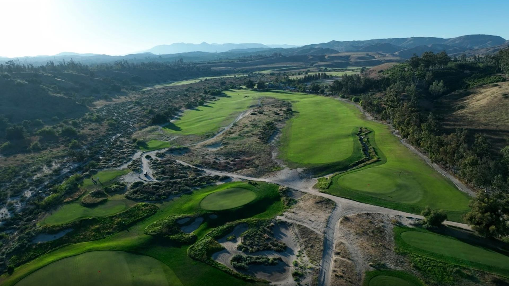
미니멀리즘의 교과서 — 단 2만 입방야드의 흙만 옮겨 자연 지형을 살린 Gil Hanse 걸작. Hanse 스스로 "가장 lay-of-the-land한 코스".A minimalist textbook — a Gil Hanse gem that moved just 20,000 cubic yards of earth, letting the land speak. Hanse himself calls it his most "lay-of-the-land" course.
팁: 겉보기보다 훨씬 전략적. 그린 주변 바랑카 조심.Tip: Far more strategic than it looks. Beware the barrancas around the greens.
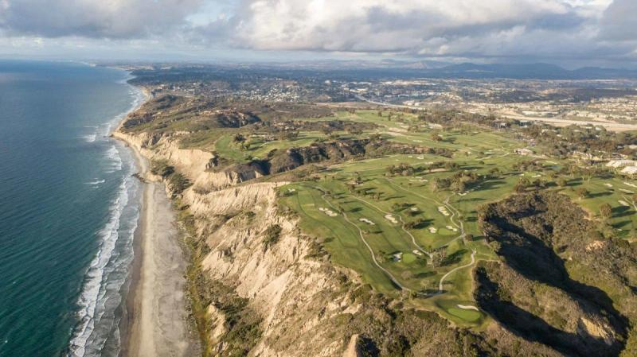
PGA 투어 최장 코스. 2008 & 2021 US Open 개최 (Tiger Woods 전설적 플레이오프). Farmers Insurance Open 홈. 78.8/148.The longest course on the PGA Tour. Host of the 2008 & 2021 US Opens (Tiger Woods' legendary playoff). Home of the Farmers Insurance Open. 78.8/148.
팁: 7,802yd — 적절한 티 선택이 핵심.Tip: 7,802 yd — choosing the right tees is everything.
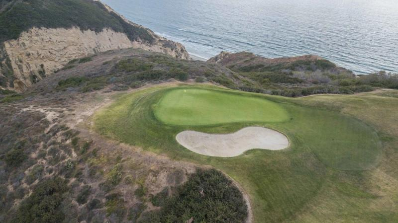
South보다 관대한 형제. Tom Weiskopf 2016 리노베이션으로 벙커↓ 접근성↑. 태평양 파노라마는 South 못지않게 압도적.The more forgiving brother of South. Tom Weiskopf's 2016 renovation cut bunkers and opened up playability. Pacific panoramas every bit as stunning.
팁: Weiskopf 리노베이션으로 즐기기 좋아짐.Tip: The Weiskopf renovation makes it far more enjoyable.
라스베이거스Las Vegas
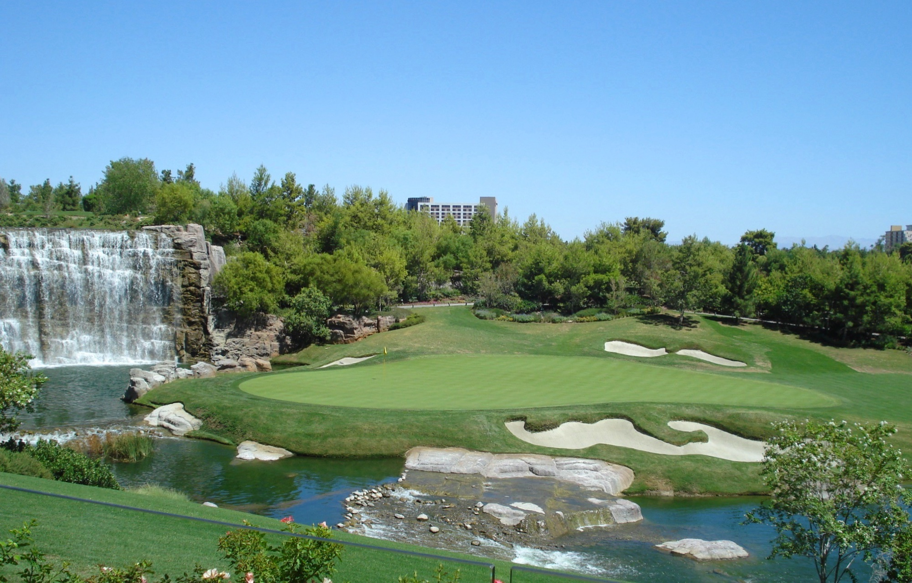
Las Vegas Strip 유일의 골프 코스. 2019년 Tom Fazio 완전 재설계. 폭포·시내·8,000그루 나무 — 스트립 한복판이라 믿기지 않는 자연.The only golf course on the Las Vegas Strip. Fully redesigned by Tom Fazio in 2019. Waterfalls, downtown views, 8,000 trees — nature you'd never believe sits mid-Strip.
팁: 그린피 $600+. Wynn 투숙객 우선.Tip: Greens fees $600+. Wynn guests get priority.
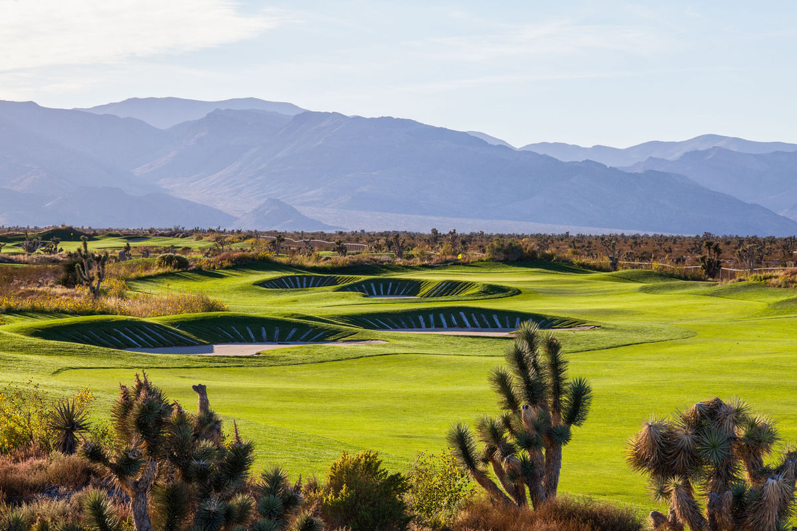
Pete Dye의 사막 3부작 중 가장 클래식한 레이아웃. 광활한 모하비 사막 배경. 스트립에서 30분.The most classic layout of Pete Dye's desert trilogy. Vast Mojave backdrops. 30 minutes from the Strip.
팁: 아침 티타임 — 오후 바람 강해짐.Tip: Take a morning tee time — afternoon winds pick up.
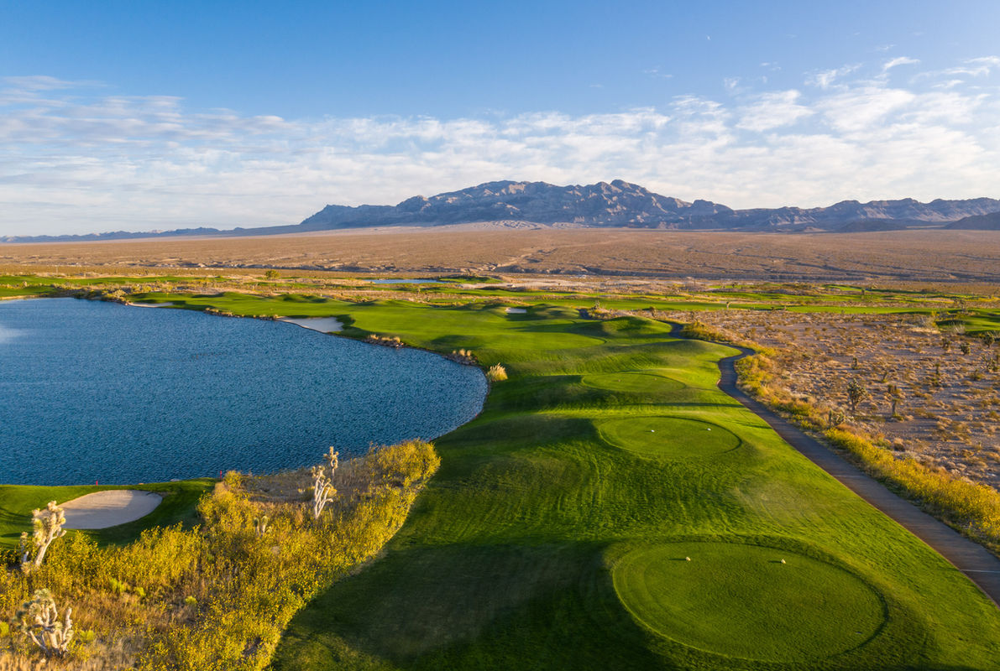
겨울철 눈 덮인 Charleston 산맥 배경 Dye의 전략적 워터 해저드. 마지막 4홀 워터 캐리 백미.Snow-dusted Charleston Mountains in winter behind Dye's strategic water hazards. The final four holes' water carries are the highlight.
팁: 겨울철 눈 덮인 산 배경 환상적.Tip: The snow-capped peaks in winter are spectacular.
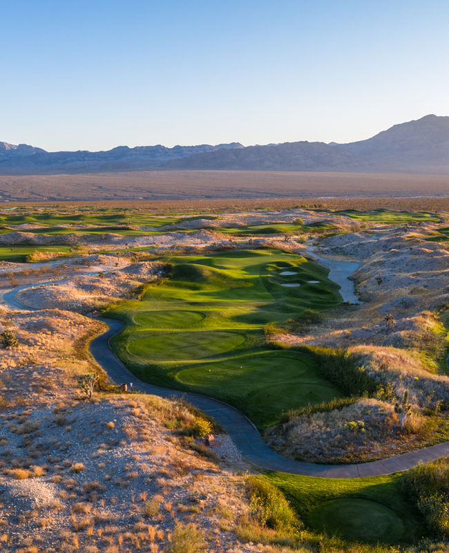
Paiute 3부작의 괴물. 7,604야드 — 네바다주 최장. Dye의 가장 공격적인 디자인. 길고 넓지만 착시.The monster of the Paiute trilogy. 7,604 yards — the longest in Nevada. Dye's most aggressive design. Long, wide — and full of illusions.
팁: 7,604yd — 적절한 티 선택이 생존의 핵심.Tip: 7,604 yd — choosing the right tees is survival.
캐나디안 로키Canadian Rockies
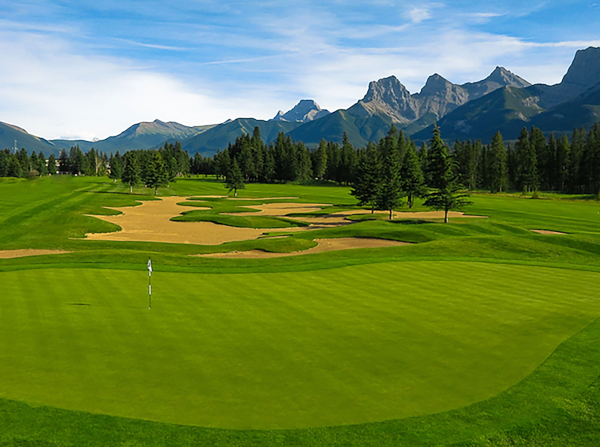
Bow River 따라 평평하게 깔린 1926년 코스. 페어웨이 어디서든 Ha Ling Peak + Three Sisters 정면. Canmore 최저가·최평탄 — 장거리 비행 후 몸 풀기 최적.A flat, welcoming 1926 course along the Bow River. Ha Ling Peak and the Three Sisters dead ahead from every fairway. Canmore's lowest price and gentlest terrain — ideal for shaking off jet lag.
팁: 늦은 오후 티타임 빛 최고. 해가 Three Sisters 뒤로.Tip: Late-afternoon tee times catch the best light as the sun sets behind the Three Sisters.
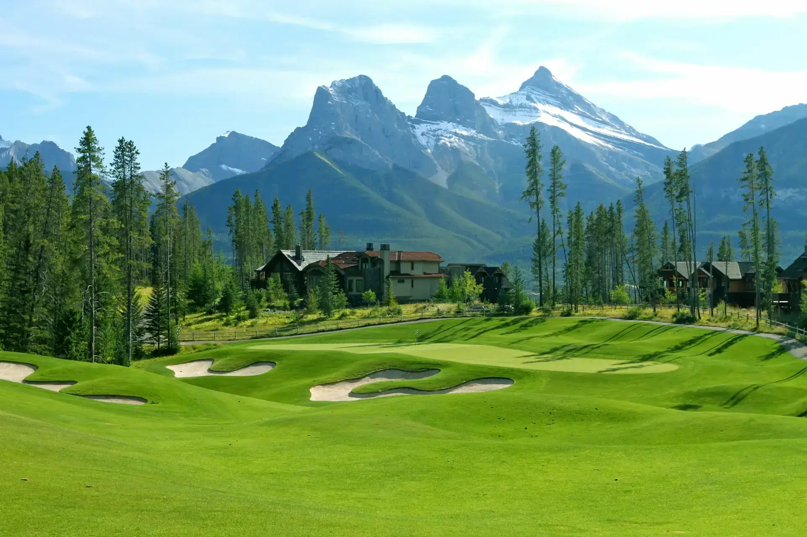
Canmore 남쪽 언덕, 모든 홀 Bow Valley 파노라마. 경사·벙커 극심 "Alberta 최고 호불호". 경치만은 이견 없음. 부담되면 블루(6,166yd) 티.On the hills south of Canmore, a Bow Valley panorama from every hole. Severe slopes and bunkers make it "Alberta's most polarizing". The scenery, though, is beyond debate. Play the Blue (6,166 yd) tees if it intimidates.
볼거리: 터키석 연못 18번 피날레. Stoney's Grill.Highlight: The turquoise pond on the 18th finale. Stoney's Grill.
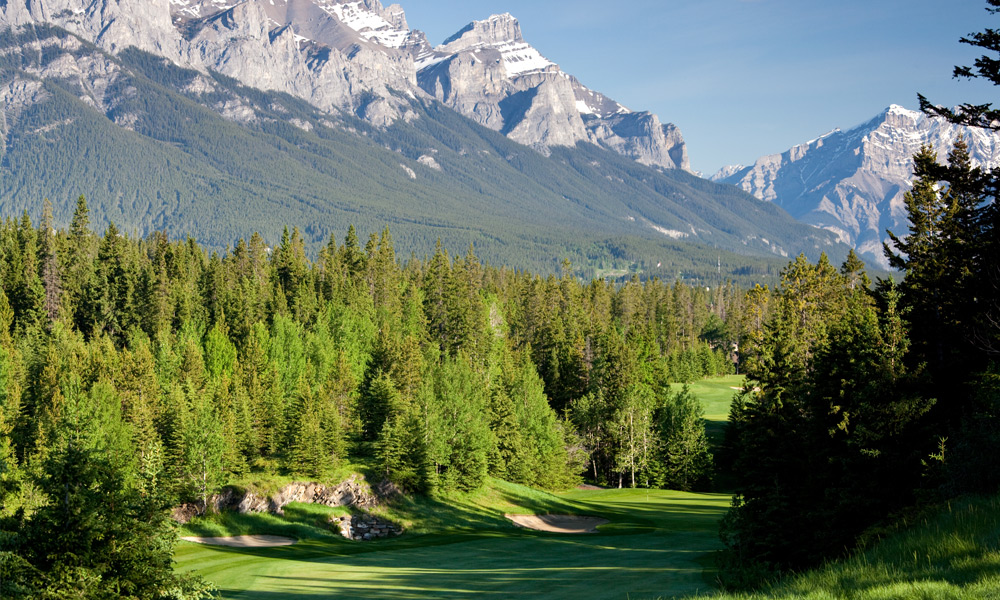
Silvertip보다 넓고 관대해 실력 편차 큰 그룹 최적. 전반 산 파노라마 강점. Canmore에서 가장 균형 잡힌 코스.Wider and more forgiving than Silvertip — ideal for groups with mixed skill levels. Front-nine mountain panoramas. Canmore's most balanced course.
팁: 토·일 오전 10:30까지 멤버 전용.Tip: Members-only until 10:30 AM on weekends.
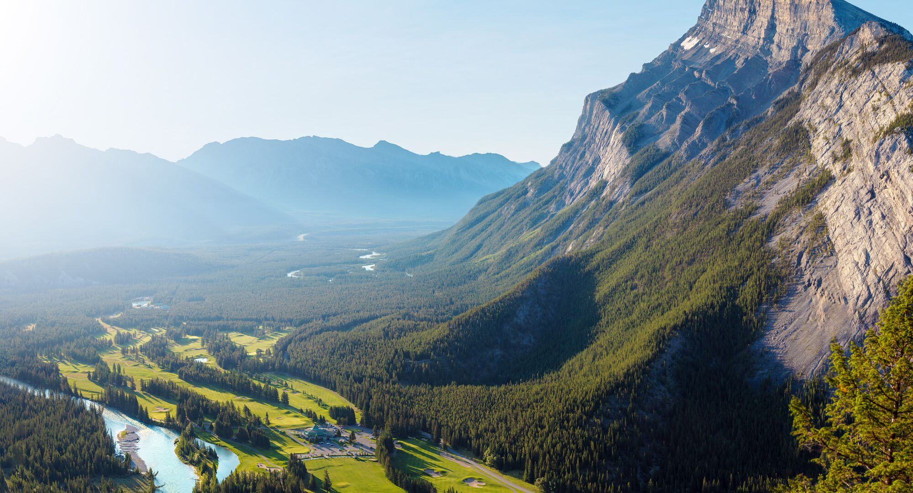
캐나다 최고·최고의 골프. 성 같은 Fairmont 호텔, 에메랄드빛 Bow River, 그림자 드리울 산들. 체크아웃 후 25분, 끝나면 Calgary — 여행 피날레 최적.Canada's best of the best. A castle-like Fairmont hotel, the emerald Bow River, mountains casting shadows. 25 minutes after checkout, then on to Calgary — the perfect journey finale.
볼거리: 15번 파4 끝없는 내리막 티샷. 성수기 최우선 예약.Highlight: The endless downhill tee shot on the par-4 15th. Book well ahead in high season.
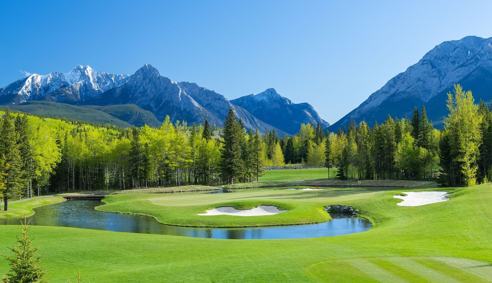
계곡 깊숙이 — 빙하 시내, 120+ 흰 벙커, 페어웨이 위 엘크. 북미 최고 평가에 가격 가장 착함. 2013년 홍수→2018년 재건.Deep in the valley — glacial creeks, 120+ white bunkers, elk on the fairways. North America's highest-rated value. Rebuilt in 2018 after the 2013 floods.
팁: 진짜 산악 골프. 체력 안배 필수.Tip: True mountain golf. Pace yourself.
춘천 · 원주 · 홍천Chuncheon · Wonju · Hongcheon

La Vie est Belle — "인생은 아름답다." 한옥 클럽하우스와 춘천의 호수·산자락이 어우러진 36홀. Old 코스 는 전통 산악 코스의 정석, 듄스코스 는 한국에서 보기 드문 링크스 스타일. KPGA 코리아오픈 개최지 — 국내 최정상급 선수들이 격돌하는 무대로 선정될 만큼 코스의 완성도와 난이도를 공인받은 명문 코스.**La Vie est Belle** — "Life is beautiful." A 36-hole course where a hanok clubhouse meets the lakes and foothills of Chuncheon. The **Old Course** is traditional mountain golf at its most classic, while the **Dunes Course** is a links-style layout rarely seen in Korea. Host of the **KPGA Korea Open** — a storied venue whose quality and difficulty have been proven by its selection as the arena where Korea's finest professionals do battle.
팁: Old 코스와 듄스코스는 완전히 다른 성격 — 당일 36홀보다는 두 번 방문해 각각 즐기는 걸 추천. 한옥 클럽하우스의 닭갈비도 놓치지 말 것.**Tip:** The Old Course and Dunes Course are completely different in character — rather than squeezing in 36 holes in one day, visit twice and savor each. Don't miss the dakgalbi at the hanok clubhouse.
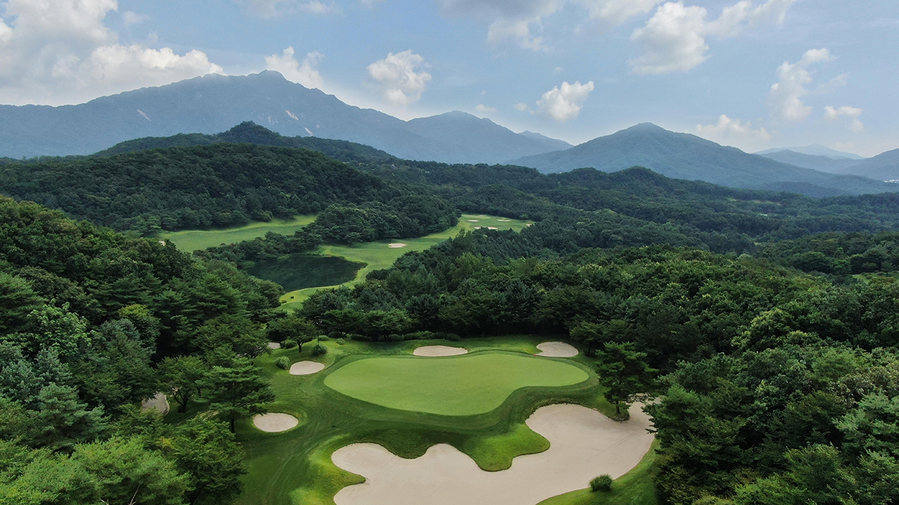
김유정 문학의 고향 신동면에 자리한 강원도 숨은 진주 . 페어웨이 컨디션과 그린 스피드가 웬만한 탑티어 프라이빗 코스를 능가한다는 평가를 받는 곳. 자연 지형을 최대한 살린 설계, 꾸준한 관리 상태, 그리고 합리적 비용까지 — 명문 프라이빗에 견줄 만한 품질을 퍼블릭에서 경험할 수 있는 보기 드문 코스.**Gangwon-do's hidden gem**, set in Sindong-myeon, the hometown of novelist Kim Yu-jeong. Its fairway conditioning and green speeds are said to outclass many top-tier private courses. With a design that honors the natural terrain, meticulous upkeep, and reasonable fees, it's a rare public course where private-club quality is within reach.
팁: 개장 시즌(4~5월)이 베스트 컨디션. 주말은 2주 전 예약 필수. 김유정 문학촌과 연계한 당일 코스 추천.**Tip:** The opening season (April–May) brings the best conditions. Weekend play requires booking two weeks ahead. A same-day pairing with the Kim Yu-jeong Literature Village comes recommended.

원주의 숨은 명작 — 치악산 자락에 안긴 자연 친화적 코스. 페어웨이가 널찍해 초중급자도 부담 없이 즐길 수 있으면서, 그린 주변 전략적 배치가 상급자에게도 생각할 거리를 준다. 도심에서 가까워 접근성이 뛰어나고, 계절마다 다른 얼굴을 보여주는 산악 골프의 정수.**Wonju's hidden masterpiece** — a nature-friendly course nestled in the foothills of Chiaksan. Generous fairways let beginners and intermediates play pressure-free, while strategic bunkering around the greens keeps better players thinking. Minutes from the city and easy to reach, it's mountain golf at its essence, revealing a different face every season.
팁: 가을 단풍 시즌(10월 중순~11월 초)이 절경. 원주 한우와 연계한 골프+미식 코스 추천.**Tip:** Fall foliage season (mid-October to early November) is spectacular. Pair with Wonju hanwoo for a golf-and-gourmet itinerary.

홍천의 떠오르는 별 — 광활한 대지 위에 펼쳐진 모던 스타일 코스. 워터 해저드를 전략적으로 배치해 시각적 즐거움과 도전을 동시에 제공한다. 강원도 특유의 청정 자연 속에서 도심에서는 느낄 수 없는 탁 트인 라운드를 경험할 수 있다. 최근 골퍼들 사이에서 입소문을 타고 급부상 중.**Hongcheon's rising star** — a modern-style course spread across vast open land. Strategically placed water hazards deliver visual drama and challenge in equal measure. In Gangwon-do's pristine natural setting, you get the wide-open rounds that city courses simply can't offer. Word of mouth among golfers has put it on a fast rise.
팁: 홍천 강변과 계곡이 가까워 여름 라운드 후 물놀이 연계 가능. 홍천 한우·더덕 요리도 필수.**Tip:** The Hongcheon riverside and valleys are close by, so you can add a dip after a summer round. Hongcheon hanwoo and deodeok dishes are must-tries.

잭 니클라우스의 고지대 걸작 — 해발 765m에 펼쳐진 27홀 산악 코스. 니클라우스가 직접 설계한 Dream·Vision·Challenge 세 개의 9홀 루프는 각기 다른 개성으로 세 번 와도 새로운 경험을 선사한다. 고지대 특유의 시원한 바람과 탁 트인 산세가 여름 골프의 성지로 꼽히는 이유.**Jack Nicklaus' highland masterpiece** — a 27-hole mountain course at 765m above sea level. The three nine-hole loops Nicklaus personally designed — **Dream, Vision, Challenge** — each carry their own personality, so three visits still feel like new experiences. The cool highland breeze and sweeping mountain terrain are exactly why this is regarded as a sanctuary for summer golf.
팁: 해발고도가 높아 여름에도 5~6도 낮은 기온 — 한여름 라운드에 최적. Dream+Vision 18홀 조합이 가장 인기.**Tip:** The high elevation keeps temperatures 5–6°C lower even in summer — ideal for midsummer rounds. The Dream + Vision 18-hole combination is the most popular.
여주 · 용인 · 이천 · 인천Yeoju · Yongin · Icheon · Incheon
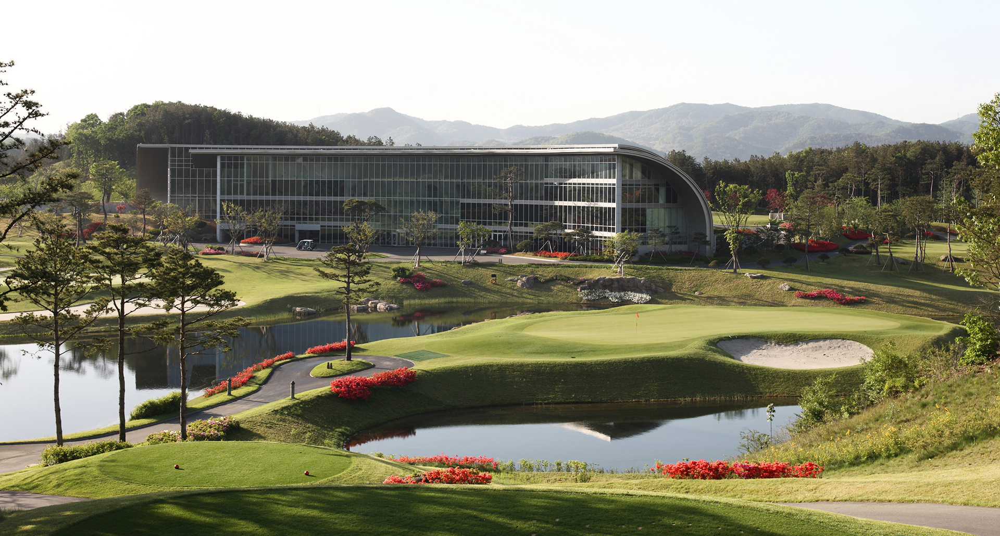
안도 타다오의 건축미학 × 토너먼트 코스 — 세계적인 건축가 안도 타다오가 설계한 콘크리트 클럽하우스가 첫 티샷 전부터 감탄을 이끌어내는 곳. KPGA·KLPGA 정규 투어 대회를 정기적으로 개최하는 토너먼트 레벨 코스 로, 전략적 워터 해저드와 정교한 그린이 상급자에게 진지한 도전을, 널찍한 페어웨이가 중급자에게는 여유를 제공한다.**Tadao Ando's architectural aesthetics × tournament golf** — the concrete clubhouse designed by the world-renowned architect draws admiration before you even reach the first tee. A **tournament-level course** that regularly hosts KPGA and KLPGA Tour events, with strategic water hazards and finely tuned greens that challenge accomplished players, while generous fairways give mid-handicappers room to breathe.
팁: 대회 직후 주중이 컨디션 최상. 클럽하우스 카페에서 안도 타다오 특유의 빛과 그림자를 감상할 것.**Tip:** Conditions peak on weekdays right after a tournament. Admire Tadao Ando's signature play of light and shadow at the clubhouse café.

삼성이 운영하는 54홀 골프 제국 — 국내 최대 규모를 자랑하는 3개 풀코스(레이크·우드·밸리)는 각기 다른 자연 테마로 조성되어 있어, 같은 장소에서 완전히 다른 세 가지 라운드를 경험할 수 있다. 특히 레이크코스는 호수를 따라 펼쳐지는 페어웨이가 시각적으로도 플레이적으로도 압권. 회원제의 철저한 관리로 페어웨이·그린 컨디션은 항상 국내 최상위권.**A 54-hole golf empire operated by Samsung** — on a scale unmatched in Korea, three full courses (Lake, Wood, Valley), each shaped around a different natural theme, let you play three completely different rounds in one place. The Lake Course is the showstopper, its fairways tracing the water visually and in play. With members-only standards of care, fairway and green conditions sit permanently among the nation's finest.
팁: 회원제로 사전 섭외 필수. 3개 코스 중 취향에 따라 선택 — 호수뷰는 레이크, 숲속 산책은 우드, 전략적 재미는 밸리.**Tip:** Members-only, so advance arrangements are essential. Pick your course by taste: Lake for water views, Wood for a forest stroll, Valley for strategic fun.
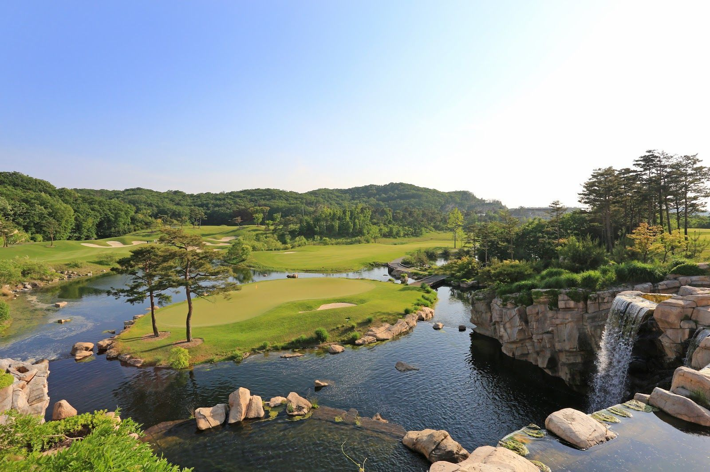
프라이빗 출신의 숨은 명문 — 원래 회원제로 출발해 퍼블릭으로 전환된 독특한 이력의 소유자. Lake 코스 는 물이 전략의 중심이 되는 유러피언 스타일, Mountain 코스 는 자연 지형을 살린 산악 골프의 정수를 보여준다. 프라이빗 시절의 설계 철학과 관리 노하우가 고스란히 남아 있어, 퍼블릭임에도 프라이빗에 버금가는 퀄리티를 경험할 수 있다.**A hidden classic with private-club lineage** — an unusual pedigree: it opened members-only, then converted to public. The **Lake Course** is European in style, with water as the strategic centerpiece; the **Mountain Course** is mountain golf shaped by the natural terrain. The design philosophy and maintenance know-how of its private years remain fully intact, so a public green fee still buys private-club quality.
팁: Lake 코스는 바람 부는 날 난이도 급상승 — 티타임 전 일기예보 확인. 이천 특산물 쌀밥 정식이 클럽하우스 별미.**Tip:** The Lake Course gets considerably harder on windy days — check the forecast before your tee time. The Icheon rice set meal is a clubhouse specialty.
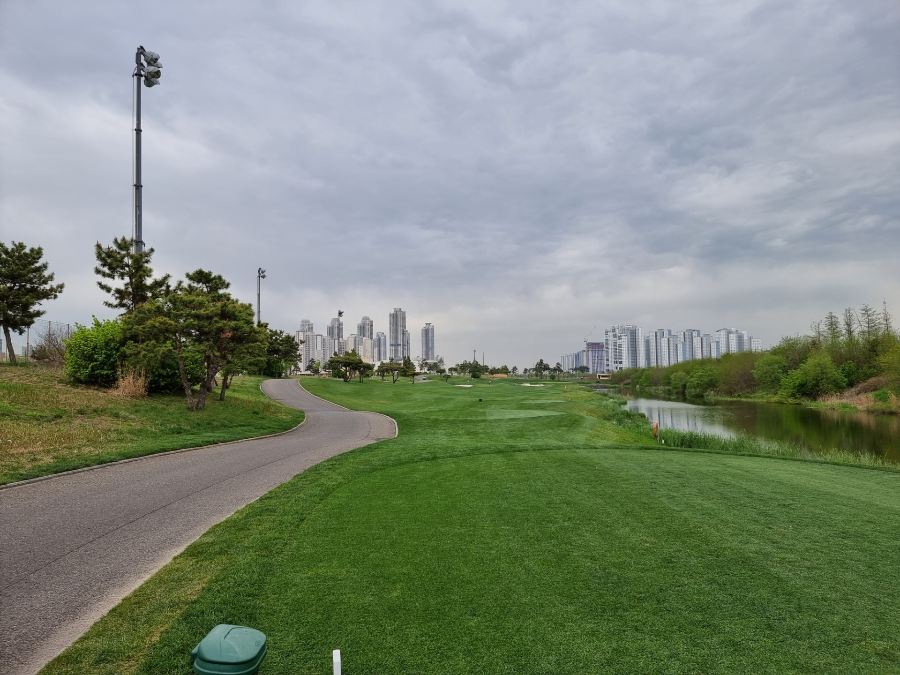
잭 니클라우스의 '베스트 히트' 컬렉션 — 니클라우스가 전 세계에서 설계한 300여 개 코스 중 최고의 홀들만 직접 골라 한곳에 재현한 유일무이한 컨셉. 멕시코, 스코틀랜드, 미국 등 세계 각지의 시그니처 홀을 27홀에 담아내, 라운드 하나로 지구 반 바퀴를 도는 듯한 다채로운 경험을 제공한다. 청라 국제도시에 위치해 인천공항에서 20분, 서울에서 40분 거리.**Jack Nicklaus' 'best hits' collection** — a one-of-a-kind concept: Nicklaus hand-picked **the finest holes** from the 300-plus courses he has designed around the world and recreated them in a single place. Signature holes from Mexico, Scotland, the United States and beyond, packed into 27 holes — one round that feels like circling half the globe. Set in Cheongna International City, 20 minutes from Incheon Airport and 40 from Seoul.
팁: 27홀 중 어느 18홀 조합이냐에 따라 전혀 다른 경험 — 방문 전 코스별 시그니처 홀 리스트를 확인하고 올 것.**Tip:** The experience changes completely depending on which 18 of the 27 holes you play — review each course's signature-hole list before visiting.
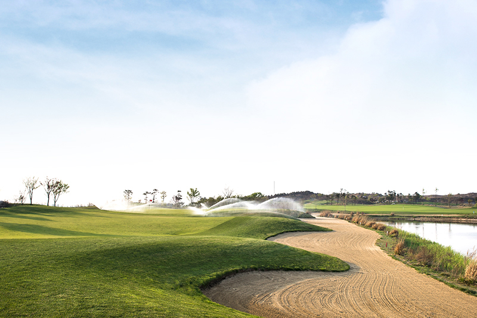
영종도 바다 위에 떠 있는 코스 — 인천공항과 인접한 입지 덕분에 해외 여행 전후로 라운드하기에 최적. 하늘코스 는 이름 그대로 탁 트인 시야와 바다를 배경으로 한 링크스 스타일 레이아웃이 특징. 바람이 강한 날에는 완전히 다른 코스로 변신하며, 서해 낙조를 바라보는 해질녘 라운드는 이곳에서만 경험할 수 있는 시그니처.**A course floating on the sea off Yeongjongdo** — right next to Incheon Airport, it's ideal for a round before or after an international flight. The **Sky Course** lives up to its name: a links-style layout with wide-open sightlines and the sea as a constant backdrop. On windy days it becomes a completely different course, and a twilight round over the West Sea sunset is a signature found only here.
팁: 해외 출국 전 이른 아침 라운드 또는 입국 후 저녁 라운드 모두 가능. 바람이 강한 날은 2~3클럽 더 잡을 것.**Tip:** Both an early-morning round before an international departure and an evening round after arrival are possible. On windy days, take 2–3 extra clubs.
남해 · 기장Namhae · Gijang

남해 절벽 위, 전 홀 오션뷰 — '한국의 페블비치'라 불릴 만큼 압도적인 해안 절경을 자랑하는 버킷리스트 코스 . 모든 홀에서 남해 바다가 조망되는 국내 유일의 오션뷰 코스로, 절벽과 파도가 만들어내는 드라마틱한 풍경 속에서 티샷을 날리는 경험은 어떤 말로도 다 담을 수 없다. 럭셔리 스파와 스위트룸을 갖춘 리조트가 함께 있어 골프+휴양 여행의 완성형.**Ocean views from every hole, atop the Namhae cliffs** — a **bucket-list course** with coastal scenery so dramatic it has earned the name 'Korea's Pebble Beach.' It is the only course in Korea with the Namhae sea in sight from every single hole — teeing off amid cliffs and crashing waves defies any description. A luxury spa and suites complete the full golf-and-resort escape.
팁: 해질녘 티타임이 절경의 백미 — 선셋 라운드 예약 경쟁 치열하니 1개월 전 예약 필수. 남해 멸치쌈밥·해산물 코스 연계 추천.**Tip:** Twilight tee times offer the most breathtaking scenery — sunset rounds are fiercely contested, so book a month ahead. Pair with Namhae anchovy ssambap and seafood.

골프 + 프라이빗 풀빌라 — 기장의 조용한 해안가에 자리한 이색 골프 리조트. 독채 구조의 풀빌라에 골프 연습 시설이 완비되어 있어, 스윙 연습과 럭셔리 휴식을 동시에 즐길 수 있다. 커플, 가족, 친구 모임 어디에나 어울리는 하이브리드 골프 여행지. 숙소 평점 9.8/10.**Golf + a private pool villa** — a distinctive golf resort on the quiet coastline of Gijang. Detached pool villas come fully equipped with golf practice facilities, so you can refine your swing and unwind in luxury at the same time. A hybrid golf getaway that suits couples, families, and friends alike. Guest rating 9.8/10.
팁: 풀빌라 인기 많아 1개월 전 예약 권장. 기장 주변 해산물 맛집(대게, 장어)과 연계하면 완벽한 골프+미식 여행.**Tip:** Pool villas are in high demand — book about a month ahead. Add Gijang's seafood restaurants (snow crab, eel) for the perfect golf-and-gourmet trip.